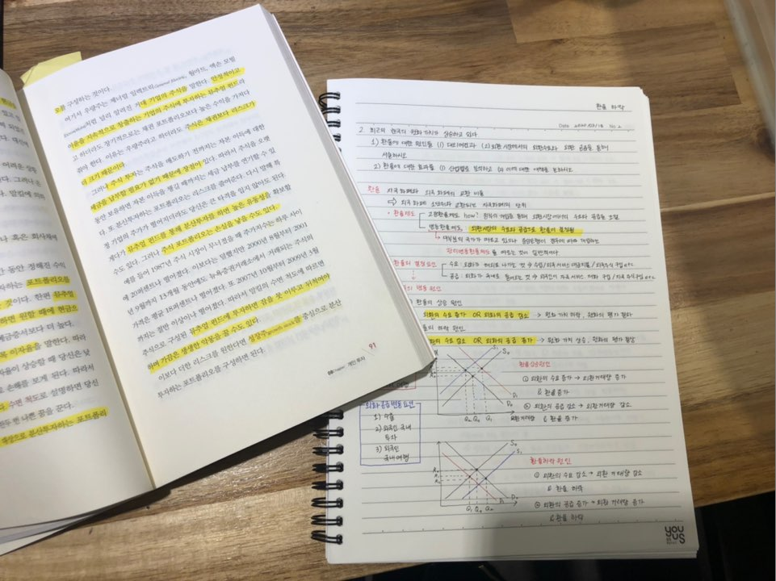

What do I like?
- Drawing (Illustration etc)
- Hanging out with best friends and family
- Writing poems
- Dancing and singing
- Acoustic music
- Seafood
- LGBT movies
- Dogs
- Foreign languages
- Chinese cuisine
- What if games
- Nasty talk with girls
- Yellow (pastel tone)
- Math
- Web cartoons
- My boyfriend
- Walking along the riverside
What do I do?
- LANGUAGE
- ECONOMICS
- CODING
Thesedays, I'm studying Chinese. How China has been developed and changed was so impressive to all the people including me. The process of development in China was so much different from what I've thought as general model of deveopment model. Also, it is so hard for me to anticipate the future of China. But ironically this is how I got my interests toward China. As knowing language is the first step to understand the country in my view, I started to study Chinese since several years ago.
I was hoping that I could have spoken chinese as local people, because I realized when people were speaking in the language they feel comfortable with, we could speak about the topic more deeply.
Now I'm spending my time memorizing chinese words, sentences and studying local way of speaking chinese. I believe this effort will bring me another level of experience in the near future.
Currently I'm reading a book 'Instant economics' which offers overall acknowledge of Economics. With the base of economis that I'm learning from the book, I'm trying to anticipate how economy would be after this Covid19 pandemic and how it will affect companies in South Korea.
I was trying to find an internship program from Linkedin, and I found myself having a hard time completing my CV. I didn't know what should be written in the CV and what shouldn't, and how I can express myself in pursuasive way. At that time, I didn't have any proof to show what kind of person I am or what I like etc. So, I decided to make my own website not only for expressing who I actually am, but also for the purpose of knowing deeply about myself. Thanks to the function of website, I can put thousands of links to anywhere I want to put more details, upload any type of post such as video, and since it is my own platform, I don't have to worry if I am uploading too much or something just as I do in Instagram or Facebook.(Haha)
Basically, I would say this is my portfolio to know myself and show it to people. I'm still on the way of updating it with learning html/css/javascript by Youtube channel "생활코딩." There are a lot of subtitles available, so try this channel if you're also interested in this area.